3340B53 rigid pipe (one) from master cylinder (pump) to abs hydraulic control unit - r r for rhd versions
- Path
- Procedures > 33 BRAKING SYSTEM > 3340 A(B.S. ANTI-LOCK BRAKING SYSTEM .) > 3340B abs system pipes > 3340B53 rigid pipe (one) from master cylinder (pump) to abs hydraulic control unit - r r for rhd versions
- Kind
- repair procedure (removal / refitting; the operation number is the code)
- Applies to
- engines: 1.6 TS , 1.8 TS, 3.2 V6, 2.4 JTD 10v; all production periods
- Interactive page
- https://sloeber94.github.io/elrnDB-a156/en/#/3238101
Applies to: engines: 1.6 TS , 1.8 TS; all production periods; only with equipment: Right hand drive
 Removing
Removing
 Refitting
RefittingPosition the vehicle on the ramp.
Ensure that the ignition key is in the OFF position, then disconnect the negative battery terminal (-).
 | Name | Connector |
|---|---|---|
- | Battery |
1016A40 ignition coil cover on cylinder head- r+r .
1048A34 sleeve(s) from flow meter to air supply capacity case - r + r .
7055B54 under-engine guard - r r .
1076B50 exhaust pipe attachment to engine - r + r .
1072D10 modular inlet manifold - r+r .
Drain the brake-clutch fluid from the reservoir using a suitable syringe.
1. Undo the connector (1a) and disconnect the rigid pipe from the master cylinder to the ABS hydraulic unit (1b), master cylinder side.
2. Release the rigid pipe from the master cylinder to the ABS hydraulic unit from the attachments on the engine bay bulkhead.
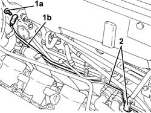
Applies to: engines: 1.6 TS , 1.8 TS; all production periods; only with equipment: Right hand drive
1. Undo the connector on the rigid pipe from the master cylinder to the ABS hydraulic unit and remove it.
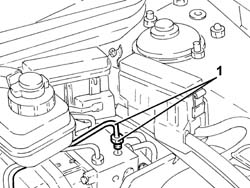
Applies to: engines: 1.6 TS , 1.8 TS; all production periods; only with equipment: Right hand drive
Refitting
RemovingRefit in its seating the rigid pipe from the master cylinder to the ABS hydraulic unit.
Connect the rigid pipe from the master cylinder to the ABS hydraulic unit, hydraulic unit side, and tighten the connector to the specified torque.
 | Fastening | Component | Ø | Value (daNm) |
|---|---|---|---|---|
- | Connector | PIPE FROM PUMP TO HYDRAULIC CONTROL UNIT | M10 | (ABS control unit side) 1.3 - 1.5 |
Secure the rigid pipe from the master cylinder to the ABS hydraulic unit with the attachments on the engine bay bulkhead.
Connect the rigid pipe between master cylinder and A.B.S. hydraulic control unit, master cylinder side and tighten the relevant connector to the specified torque.
| Fastening | Component | Ø | Value (daNm) |
|---|---|---|---|---|
- | Connector | PIPE FROM PUMP TO HYDRAULIC CONTROL UNIT | M10 | (Pump side) 1.3 - 1.5 |
3330A14 HYDRAULIC BRAKING SYSTEM - Bleed air .
1072D10 modular inlet manifold - r+r .
1076B50 exhaust pipe attachment to engine - r + r .
7055B54 under-engine guard - r r .
1048A34 sleeve(s) from flow meter to air supply capacity case - r + r .
1016A40 ignition coil cover on cylinder head- r+r .
Connect the negative (-) battery terminal.
Remove the car from the ramps.
Applies to: engines: 2.4 JTD 10v; all production periods; only with equipment: Right hand drive
Removing
Refitting1. Undo the bolts (1a) and remove the sound proof cover (1b).
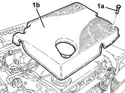
Applies to: engines: 2.4 JTD 10v; all production periods; only with equipment: Right hand drive
Drain the brake-clutch fluid from the reservoir using a suitable syringe.
1. Undo the nuts (1a) and move the plug preheating control unit and E.G.R modulator valve mounting bracket (1b) forwards.
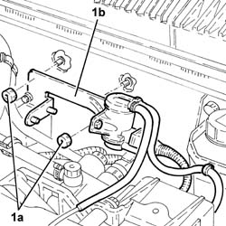
Applies to: engines: 2.4 JTD 10v; all production periods; only with equipment: Right hand drive
1. Undo the bolts (1a) and remove the power assisted steering fluid reservoir (1b).
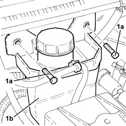
Applies to: engines: 2.4 JTD 10v; all production periods; only with equipment: Right hand drive
5530B52 Battery DRIP TRAY/SUPPORT - R.R. .
Disconnect the middle rigid pipe between the clutch pump and the damper so the brake pipes mentioned can be removed more easily.
1. Undo connector (1a) and disconnect the rigid pipe between master cylinder and A.B.S hydraulic control unit (1b), master cylinder side.
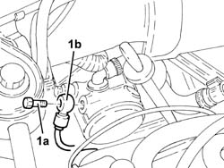
Applies to: engines: 2.4 JTD 10v; all production periods; only with equipment: Right hand drive
1. Disconnect the rigid pipe between master cylinder and A.B.S hydraulic control unit, A.B.S hydraulic control unit side.
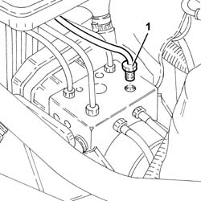
Applies to: engines: 2.4 JTD 10v; all production periods; only with equipment: Right hand drive
1. Remove the rigid pipe between master cylinder and A.B.S. hydraulic control unit after disengaging it from the relevant bands.
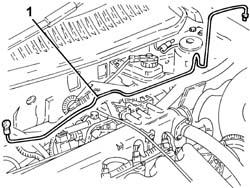
Applies to: engines: 2.4 JTD 10v; all production periods; only with equipment: Right hand drive
Refitting
RemovingPlace the rigid pipe between master cylinder and A.B.S. hydraulic control unit back in its housing and secure with the relevant bands.
Connect the rigid pipe between master cylinder and A.B.S hydraulic control unit, A.B.S hydraulic control unit side and tighten the relevant connector to the specified torque.
| Fastening | Component | Ø | Value (daNm) |
|---|---|---|---|---|
- | Connector | PIPE FROM PUMP TO HYDRAULIC CONTROL UNIT | M10 | (Hydraulic control unit side A.B.S.) 1.3 - 1.5 |
Connect the rigid pipe between master cylinder and A.B.S hydraulic control unit, master cylinder side and tighten the relevant connector to the specified torque.
| Fastening | Component | Ø | Value (daNm) |
|---|---|---|---|---|
- | Bolt | Clutch pedal | M8 | Pedals side 2.7 - 3.4 |
Connect the middel connector of the rigid pipe between clutch pump and damper and tighten to the recommended torque.
| Fastening | Component | Ø | Value (daNm) |
|---|---|---|---|---|
- | Connector | RIGID DELIVERY PIPE FROM MASTER CYLINDER | M12 | (Intermediate connector side) 1.7 - 1.9 |
5530B52 Battery DRIP TRAY/SUPPORT - R.R. .
Refit in its seating the power steering fluid reservoir and secure it with its bolts.
Place the the plug preheating control unit and E.G.R modulator valve mounting bracket back in its housing and secure with the relevant nuts.
Place the soundproof cover back in its housing and secure using the relevant bolts.
3330A14 HYDRAULIC BRAKING SYSTEM - Bleed air .
1820B08 Clutch release HYDRAULIC SYSTEM - Bleeding air and restoring level .
Applies to: engines: 3.2 V6; all production periods
Removing
RefittingEnsure that the ignition key is in the OFF position, then disconnect the negative battery terminal (-).
| Name | Connector |
|---|---|---|
- | Battery |
1008C10 power unit upper reaction link r r
5530B52 Battery DRIP TRAY/SUPPORT - R.R.
1048A28 vacuum air circuit resonator pipe - r+r
1048A48 throttle heater sleeve - r r
1. Undo the connector (1a) and disconnect the rigid pipe from the master cylinder to the ABS hydraulic unit (1b), master cylinder side.
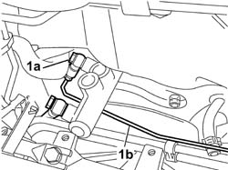
Applies to: engines: 3.2 V6; all production periods
1. Undo the connector on the rigid pipe from the cylinder to the ABS hydraulic unit, ABS ECU side.
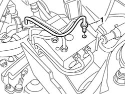
Applies to: engines: 3.2 V6; all production periods
1. Remove the rigid pipe between master cylinder and A.B.S. hydraulic control unit after disengaging it from the relevant bands.
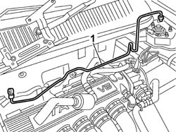
Applies to: engines: 3.2 V6; all production periods
Refitting
RemovingPlace the rigid pipe between master cylinder and A.B.S. hydraulic control unit back in its housing and secure with the relevant bands.
Connect the rigid pipe from the master cylinder to the ABS hydraulic unit, hydraulic unit side, and tighten the connector to the specified torque.
Connect the rigid pipe between master cylinder and A.B.S. hydraulic control unit, master cylinder side and tighten the relevant connector to the specified torque.
| Fastening | Component | Ø | Value (daNm) |
|---|---|---|---|---|
- | Bolt | PIPE FROM PUMP TO HYDRAULIC CONTROL UNIT | - | (On master cylinder) 1.8 |
1048A48 throttle heater sleeve - r r
1048A28 vacuum air circuit resonator pipe - r+r
5530B52 Battery DRIP TRAY/SUPPORT - R.R.
1008C10 power unit upper reaction link r r .
- 0010T64 brake and or clutch fluid check level and top up as necessary
0010T65 hydraulic brake system bleed air
0010T67 hydraulic clutch system bleed air
Connect the negative (-) battery terminal.
Topics linked from this page (19)
- 0010T65 hydraulic brake system bleed air
- 0010T67 hydraulic clutch system bleed air
- 1008C10 power unit upper reaction link r r
- 1016A40 ignition coil cover on cylinder head- r+r
- 1048A28 vacuum air circuit resonator pipe - r+r
- 1048A34 sleeve(s) from flow meter to air supply capacity case - r + r
- 1048A48 throttle heater sleeve - r r
- 1072D10 modular inlet manifold - r+r
- 1076B50 exhaust pipe attachment to engine - r + r
- 1820B08 Clutch release HYDRAULIC SYSTEM - Bleeding air and restoring level
- 1820B43 RIGID PIPE from clutch reservoir to (pump) - master cylinder R.R. for right hand drive versions
- 1820B47 rigid pipe from master cylinder (pump) to vibration damper - r r for right hand drive versions
- 3330A14 HYDRAULIC BRAKING SYSTEM - Bleed air
- 3330C38 FLEXIBLE PIPE - FRONT section - from brake fluid RESERVOIR to (pump) - MASTER CYLINDER R.R. for right hand drive versions
- 3330C39 FLEXIBLE PIPE - REAR section - from brake fluid RESERVOIR to (pump) - MASTER CYLINDER R.R. on right hand drive versions
- 5530B10 battery - r+r
- 5530B52 Battery DRIP TRAY/SUPPORT - R.R.
- 7055B54 under-engine guard - r r
- A1B Battery ( BATTERY NEGATIVE )